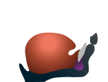

TRILATERAL SYLLABLE
The Hundli theory and pattern can transform back and forth the trilateral structures between a speech syllable in time and a graphic syllable on paper (FIG. 1a and b). The graphic syllable places the opening (<◯), lasting (ㅢ), and closing (◯>) letters vertically to the top, middle, and bottom of a syllable block, respectively. Here ◯ and ㅢ denote an arbitrary consonant and vowel, respectively. In the pre-superscript and subscript of ◯, the angle brackets, i.e., < and >, distinguish the opening and closing sounds. This template of a graphic syllable is named /ɨŋ/ in IPA or simply wing by the phonetic similarity as we read it in Hangul. Note that fat, tall, and big vowels having ㅡ, ㅣ, and both, respectively, are placed to the bottom, right, and both of <◯. The opening and lasting letters are essential in a graphic syllable while only lasting sound is essential in a speech syllable. In a graphic syllable, ㅇ is placed in <◯ if its opening sound is silent while ◯> is omitted if its closing sound is silent.
| (a) Speech Syllable | (b) Graphic Syllable |
PRIMITIVE VOWELS
For the primitive vowels, the geometric primitives outline the vibrant articulators of their sounds, i.e., [ʌ], [ɯ], and [i], in FIG. 2. First, the dot (ㆍ) characterizes the vibrant palate in FIG. 2c when [ʌ] is produced at the middle height of the jaw. Second, the horizontal line (ㅡ) characterizes the flat of the vibrant tongue in FIG. 2b when [ɯ] is produced at the minimal height of the jaw. Third, the vertical line (ㅣ) characterizes vibrant open sides of the raised tongue back in FIG. 2a when [i] is produced at the minimal height of the jaw. They form the tripod of all diverging, converging, and iotized vowels in Hangul.
| (a)ㅣ for [i] | Letter Formation |
|---|---|

|

|
| (b) ㅡ for [ɯ] | (c) ㆍ for [ʌ] |
OPENING SOUNDS
For primitive opening sounds, the basic shapes outline the articulators of their sounds, i.e., [ɯ], [m], and [s]. A circle, square, and triangle characterize the round throat, square lips, and sharp teeth (FIG. 3). Soft airflow from a relaxed larynx with no tension produces [ɯ] (FIG. 3c or FIG. 2b). This articulation defines the reference state where an opening articulation ends. For example, the opening lips that articulate from the shutting lips to the reference point produce their opening sound, i.e., [m], instantly by escaping air through them (FIG. 3b). The opening teeth with the tongue tip from FIG. 3a to c produces the opening [s].
| (a) ㅅ | Letter Formation |
|---|---|
|  |

|
| (b) ㅁ | (c) ㅇ |
CLOSING SOUNDS
Reverse articulation of an opening sound, if possible, defines the closing sound whose letter reuses the opening letter (FIG. 4). Note that the throat cannot close the vocal tract so that its closing sound is not applicable (FIG. 4c). However, this articulation defines the reference state where a closing articulation starts. For example, the closing lips that articulate from FIG. 4c to b produce their nasal sound, i.e., the closing [m], by escaping air through nasal tract. The teeth can close the oral tract airtight together with the tongue tip and produce their closing sound, i.e., the closing [s] (FIG. 4a).
| (a) ᆺ | Letter Formation |
|---|---|
| (b) ᆷ | (c) ᆼ |
Primitive Open Syllables
All combinations of three primitive opening and lasting sounds populate the primitive open syllables.
| ㅁ | ㅅ | ㅇ |
Open. Last. |
|---|---|---|---|
| | | | ㆍ |
| 미 | 시 | 이 | ㅣ |
| 므 | 스 | 으 | ㅡ |

|
|
| Speech Production | Letter Formation |
|---|
Primitive Closed Syllables
All combinations of three primitive lasting and closing sounds populate the primitive open syllables.
| ㆍ | ㅡ | ㅣ |
Last. Clos. |
|---|---|---|---|
| | 음 | 임 | ᆷ |
| | 읏 | 잇 | ᆺ |
|
|
|
| Speech Production | Letter Formation |
|---|
Closed Syllables by ㅁ
All combinations of three primitive vowels and consonants populate the primitive syllables.
| ㅁ | ㅅ | ㅇ |
Open. Rhym. |
|---|---|---|---|
| | | | |
| 밈 | 심 | 임 | 임 |
| 믐 | 슴 | 음 | 음 |
|
|
|
| Speech Production | Letter Formation |
|---|
Closed Syllables by ㅅ
All combinations of three primitive vowels and consonants populate the primitive syllables.
| ㅁ | ㅅ | ㅇ |
Open. Rhym. |
|---|---|---|---|
| | | | |
| 밋 | 싯 | 잇 | 잇 |
| 믓 | 슷 | 읏 | 읏 |
|
|
|
| Speech Production | Letter Formation |
|---|